Fundamentos de biología
Lección 1: Introducción a la biología

¿Qué es la vida?
Definición básica
La biología es la rama de la ciencia que se dedica al estudio de los seres vivos, o lo que comúnmente llamamos “vida”. En este contexto, la vida se entiende como un conjunto de procesos que caracterizan a los organismos vivos.
Características de los seres vivos
- Organización: Están formados por células especializadas.
- Crecimiento: Aumentan su tamaño o complejidad con el tiempo.
- Metabolismo: Transforman energía y materia para mantenerse vivos.
- Respuesta a estímulos: Reaccionan a cambios en su entorno.
- Reproducción: Generan descendencia con características similares.
- Evolución: Presentan cambios genéticos a lo largo de generaciones.
Importancia del orden y la energía
Los seres vivos mantienen su organización interna usando energía constantemente. Aunque la naturaleza tiende al desorden (entropía), los organismos pueden conservar estructuras complejas gracias al flujo de energía.
Conclusión
La vida es un conjunto dinámico de procesos que incluyen metabolismo, orden, respuesta, reproducción y evolución. La biología busca comprender cómo estos procesos se manifiestan en todos los niveles, desde moléculas hasta ecosistemas.
La ciencia de la biología
Qué es la biología como ciencia
La biología es la rama de la ciencia que estudia la vida. No se limita a describir los seres vivos, sino a comprender sus procesos, mecanismos y cómo interactúan con su entorno.
El método científico en biología
En biología se utilizan observación, formulación de hipótesis, experimentación y análisis para explorar preguntas sobre la vida. A través de este método, los biólogos diseñan experimentos y recolectan datos para entender fenómenos como el crecimiento, la reproducción o la evolución.
Interdisciplinariedad
La biología no funciona de forma aislada: se relaciona con la química (bioquímica), la física (biofísica), la ecología, la genética, entre otras disciplinas. Estas conexiones permiten explicar desde moléculas hasta ecosistemas.
Estructura y organización de los seres vivos
Los organismos biológicos están organizados en múltiples niveles: moléculas, células, tejidos, órganos y organismos. Esta jerarquía es fundamental para comprender cómo se mantiene la vida y cómo emergen las propiedades biológicas complejas.
La biología como ciencia en acción
Los biólogos desarrollan conocimientos aplicables: ya sea para mejorar la salud, cuidar el medioambiente o crear tecnologías biológicas. Esta ciencia evoluciona constantemente a medida que se descubren nuevos mecanismos y se refina el entendimiento de la vida.
Agua y Vida
Importancia biológica del agua
El agua es una molécula esencial para todos los seres vivos. Su polaridad y capacidad para formar enlaces de hidrógeno le permiten actuar como un excelente solvente, facilitando reacciones químicas y el transporte de sustancias dentro de los organismos.
Estructura y propiedades del agua
Una molécula de agua (H₂O) está formada por dos átomos de hidrógeno y uno de oxígeno. Puede formar puentes de hidrógeno, lo que da lugar a propiedades únicas como la cohesión, adhesión y alta capacidad calorífica.

Agua y reacciones bioquímicas
El agua participa directamente en muchas reacciones metabólicas, incluyendo procesos de síntesis y degradación. Además, actúa como vehículo para transportar nutrientes, iones y productos de desecho.
Densidad y estado sólido
Cuando el agua se congela, las moléculas se organizan formando una estructura menos densa que el agua líquida. Por eso el hielo flota, permitiendo que los ecosistemas acuáticos sobrevivan bajo la capa de hielo en climas fríos.
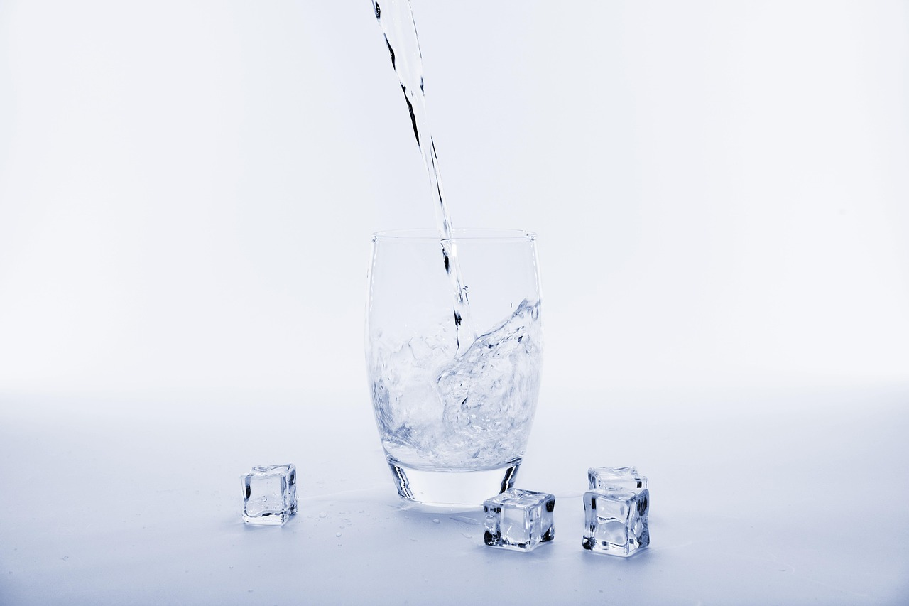Rol del agua en los organismos
En la mayoría de los seres vivos, el agua representa un gran porcentaje del cuerpo. En los humanos, aproximadamente el 70 %. Contribuye a la termorregulación, transporte interno, lubricación y mantenimiento de la estructura celular.
Lección 2: La química de la vida

Materia, Elementos y Átomos
¿Qué es la materia?
La materia es todo aquello que ocupa espacio y tiene masa. Incluye todo lo físico: sólidos, líquidos y gases. En biología, gran parte de la materia se refiere a moléculas presentes en los organismos, como proteínas, carbohidratos y lípidos.
Elementos químicos
Un elemento químico es una sustancia formada por un solo tipo de átomo. Cada elemento tiene propiedades únicas según su número atómico y masa atómica. En la biología, elementos como el carbono, hidrógeno, oxígeno y nitrógeno son esenciales para la vida.
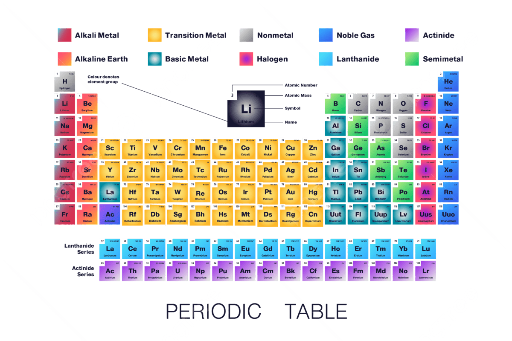Átomos: estructura básica
Un átomo está compuesto por un núcleo (formado por protones y neutrones) y electrones que giran alrededor. Los protones tienen carga positiva, los electrones negativa, y los neutrones son neutros. Estos componentes determinan las propiedades químicas del átomo.
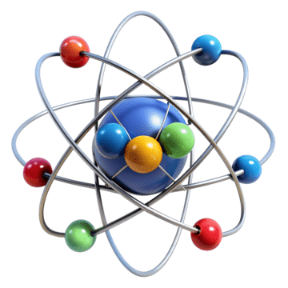Isótopos
Los isótopos son variantes de un mismo elemento con diferente número de neutrones. Aunque tienen el mismo número de protones, su masa puede variar. En biología, algunos isótopos son útiles para estudios radiológicos o trazadores moleculares.
Enlaces atómicos y moléculas
Los átomos pueden formar enlaces químicos (iónicos, covalentes, metálicos) para crear moléculas. En los seres vivos, muchas moléculas complejas están formadas por átomos unidos por enlaces covalentes, lo cual permite la formación de cadenas de carbono y estructuras estables.
Importancia biológica
La composición química de los organismos depende principalmente de unos pocos elementos: carbono, hidrógeno, oxígeno, nitrógeno, fósforo y azufre. Estos elementos forman moléculas biológicas esenciales: ADN, proteínas, lípidos y carbohidratos.
Capas Electrónicas y Orbitales
Estructura de las capas electrónicas
Los electrones alrededor del núcleo del átomo no giran en órbitas fijas como planetas, sino que ocupan regiones llamadas capas o niveles de energía. Cada capa tiene un número cuántico principal (n) que indica su distancia al núcleo y energía.
Subcapas y orbitales
Dentro de cada capa hay subcapas (s, p, d, f), y cada subcapa contiene orbitales. Los orbitales son “nubes” de probabilidad donde es más probable encontrar un electrón.
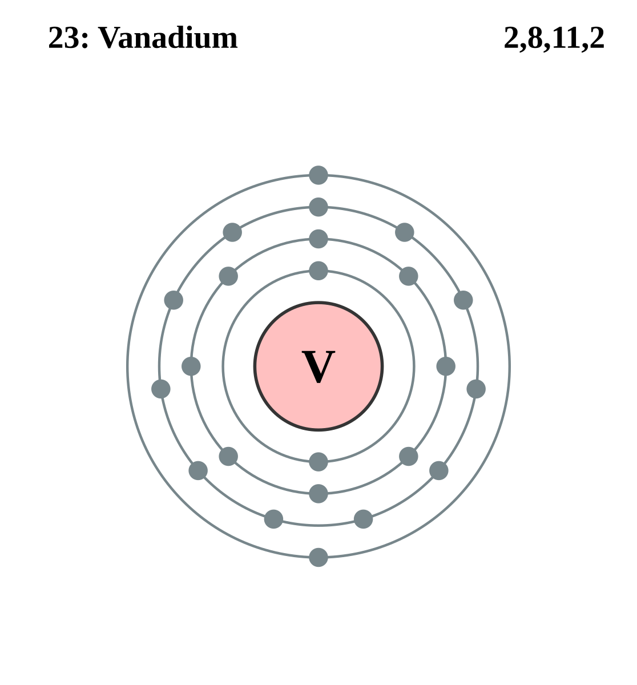Principio de Aufbau y configuración electrónica
El principio de Aufbau establece que los electrones se llenan primero en los orbitales de menor energía, siguiendo un orden específico. Esto determina cómo se distribuyen los electrones en los diferentes niveles y subniveles.

Energía y forma de los orbitales
Los orbitales tienen diferentes formas (esférica para s, de “pesas” para p, más complejas para d y f) y diferentes niveles energéticos. Los electrones tienden a ocupar primero los orbitales más cercanos y de menor energía.
Importancia biológica
La forma en que los electrones se distribuyen en capas y orbitales es esencial para entender la reactividad química de los elementos. En biología, esto ayuda a explicar por qué ciertos átomos (como carbono, oxígeno y nitrógeno) forman moléculas estables que son fundamentales para la vida.
Enlaces Químicos
¿Qué son los enlaces químicos?
Los enlaces químicos son las fuerzas que mantienen unidos a los átomos para formar moléculas o compuestos. Estos enlaces permiten que la materia adopte estructuras estables y desempeñe funciones biológicas.
Tipos principales de enlaces
Existen varios tipos de enlaces, según cómo se compartan o transfieran los electrones:
- Enlace iónico: transferencia de electrones entre átomos, formando iones.
- Enlace covalente: dos átomos comparten uno o más pares de electrones.
- Enlace metálico: los electrones se mueven en un “mar” de electrones entre átomos metálicos.
Enlace iónico
En un enlace iónico, un átomo dona electrones a otro, generando iones con cargas opuestas que se atraen por fuerzas electrostáticas. Este enlace suele ocurrir entre metales y no metales.
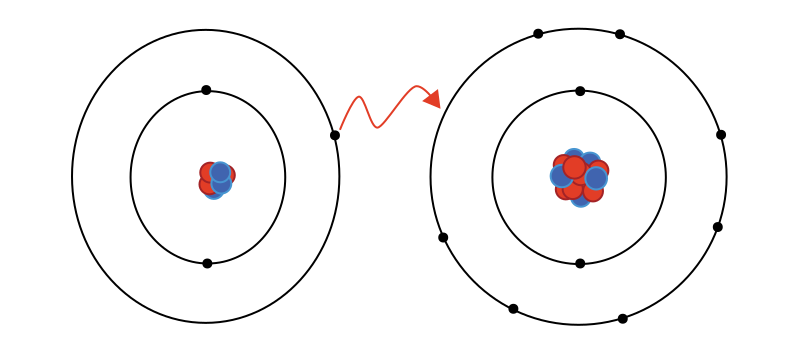Enlace covalente
En un enlace covalente, los átomos comparten pares de electrones. Dependiendo de la electronegatividad, puede ser polar o no polar.
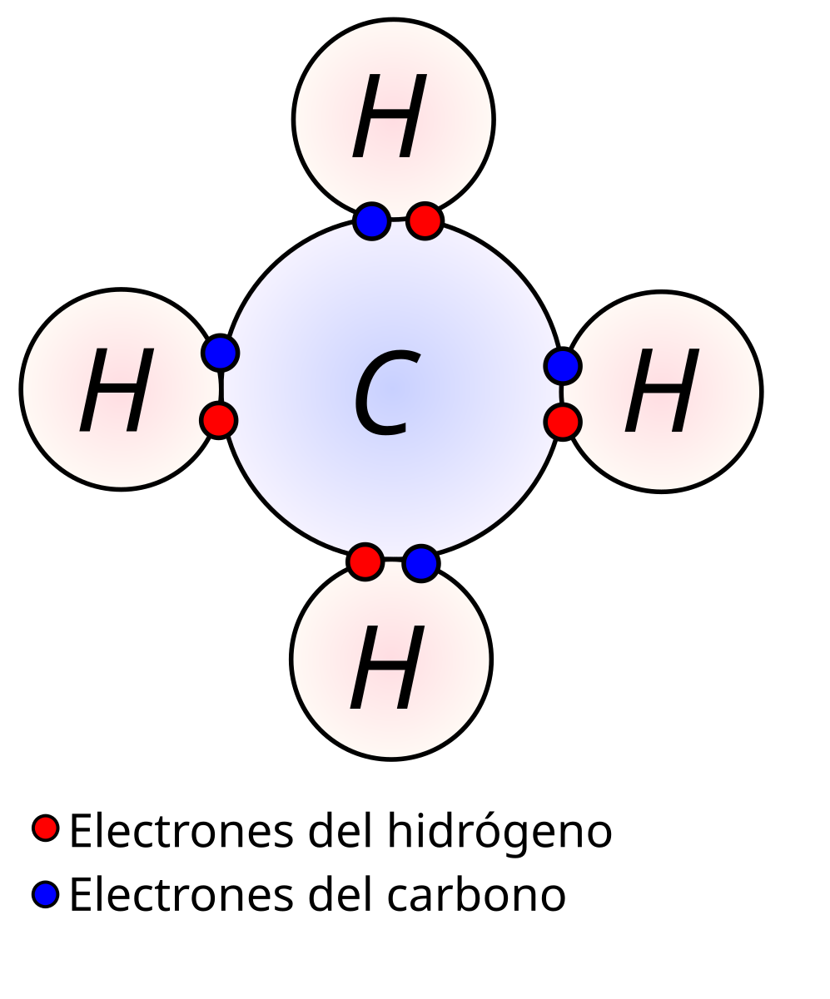Enlace metálico
En los metales, los electrones no están ligados a un solo átomo sino que se mueven libremente entre muchos átomos, lo que explica propiedades como la conductividad eléctrica.
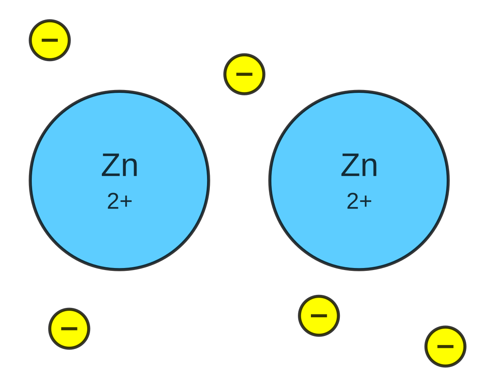Importancia biológica de los enlaces químicos
Los enlaces químicos son fundamentales para la vida. Las moléculas biológicas (como proteínas, ADN, carbohidratos) dependen de estos enlaces para su estructura y función.
Reacciones Químicas
¿Qué es una reacción química?
Una reacción química es un proceso en el que una o más sustancias (reactivos) se transforman en nuevas sustancias (productos). Durante esta transformación, se rompen enlaces de los reactivos y se forman nuevos enlaces en los productos.
Energía en las reacciones químicas
Las reacciones requieren un impulso de energía llamado energía de activación. Dependiendo del proceso, las reacciones pueden liberar energía (reacciones exergónicas) o absorber energía (reacciones endergónicas).
Reactivos, productos y equilibrio
Los reactivos son las sustancias iniciales y los productos son las sustancias finales después de la reacción. Algunas reacciones son reversibles, lo que significa que los productos pueden volver a transformarse en reactivos.
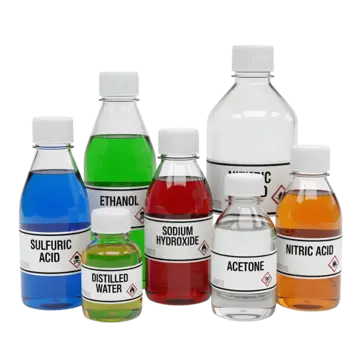Tipos de reacciones
Hay reacciones que liberan energía (exotérmicas) y otras que la absorben (endotérmicas), lo cual tiene importantes implicaciones en los sistemas biológicos.
Importancia biológica
Las reacciones químicas son esenciales para los seres vivos: permiten el metabolismo, la síntesis de moléculas grandes como proteínas y ácidos nucleicos, y el almacenamiento o liberación de energía en procesos vitales.
Lección 3: Agua, ácidos y bases
Puentes de Hidrógeno en el Agua
¿Qué son los puentes de hidrógeno?
Los puentes de hidrógeno son interacciones débiles que surgen entre un átomo de hidrógeno, con carga parcial positiva, y un átomo más electronegativo, como el oxígeno. En el agua, estos enlaces permiten que las moléculas queden unidas temporalmente, lo que afecta muchas de sus propiedades únicas.

Cómo se forman en el agua
En una molécula de agua, el átomo de hidrógeno se enlaza al oxígeno mediante un enlace covalente. Debido a la polaridad de la molécula, los átomos de hidrógeno de una molécula pueden formar puentes con el oxígeno de otra, creando una red temporal de moléculas.
Propiedades emergentes gracias a los puentes
Estos enlaces contribuyen a la alta tensión superficial del agua, su elevado punto de ebullición, y su capacidad para absorber y retener calor. Además, ayudan a la cohesión entre moléculas, permitiendo que el agua se desplace dentro de los organismos (como en los vasos conductores de las plantas).
Importancia para la vida
Gracias a los puentes de hidrógeno, el agua actúa como un regulador térmico eficiente y soporte estructural: las moléculas se organizan de forma que proporcionan estabilidad, tanto en ambientes acuáticos como dentro de las células.
Agua como Solvente
Polaridad del agua
El agua es una molécula polar: tiene un extremo con carga parcial positiva y otro con carga parcial negativa. Esta polaridad permite que interactúe con otras moléculas cargadas o polares mediante enlaces electrostáticos.
Solución acuosa y solubilidad
Gracias a su polaridad y a sus puentes de hidrógeno, el agua puede disolver una gran variedad de sustancias, especialmente aquellas que también son polares o iónicas. Estas sustancia se denominan hidrofílicas.
Substancias que no se disuelven bien
Algunas moléculas apolares o no polares no se disuelven fácilmente en agua. Estas sustancias se conocen como hidrofóbicas, como los lípidos o aceites, ya que no pueden formar interacciones fuertes con las moléculas de agua.
Solvatación y esferas de hidratación
Al disolverse un ión o una molécula en agua, las moléculas de agua se orientan alrededor del soluto formando una “esfera” organizada. Esta estructura se llama esfera de solvatación o esfera de hidratación y estabiliza el soluto dentro de la solución.

Importancia biológica
El papel del agua como solvente es fundamental para la vida: permite que muchas reacciones químicas ocurran en disolución, facilita el transporte de nutrientes y iones en los organismos, y mantiene los componentes celulares en su sitio.
Ácidos, Bases, pH y Tampón
¿Qué es un ácido y qué es una base?
Un ácido es una sustancia que dona protones (H⁺) en una solución, mientras que una base es una sustancia que los acepta. Estos procesos afectan la concentración de iones H⁺ y, por ende, el pH de la solución.
Escala de pH
La escala de pH va de 0 a 14 y permite cuantificar cuán ácida o básica es una solución. Un pH menor que 7 indica acidez; un pH igual a 7 es neutro; y un pH mayor que 7 indica alcalinidad.
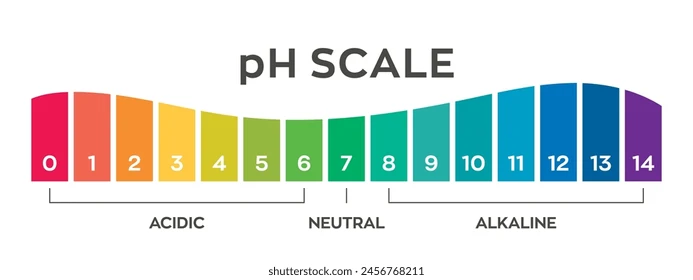Tampón o solución buffer
Un tampón es una solución que resiste cambios significativos de pH cuando se le añaden pequeñas cantidades de ácido o base. Las soluciones tampón son esenciales en sistemas biológicos para mantener condiciones estables.
Importancia biológica del pH y los tampones
El mantenimiento del pH apropiado es crucial para la función de enzimas, la estructura de proteínas y el metabolismo. Los seres vivos emplean sistemas tampón para regular el pH dentro de su ambiente interno y así facilitar los procesos vitales.
Lección 4: Las propiedades del carbono
Carbono e Hidrocarburos
El carbono como elemento clave
El carbono es fundamental para la vida porque puede formar hasta cuatro enlaces covalentes. Esta propiedad le permite construir estructuras muy diversas, como cadenas largas, anillos y ramificaciones, que son la base de las moléculas biológicas.

Qué son los hidrocarburos
Los hidrocarburos son compuestos formados únicamente por átomos de carbono e hidrógeno. Son moléculas orgánicas simples pero muy versátiles en biología y química.
Tipos de enlaces entre carbonos
Los enlaces entre átomos de carbono pueden ser simples, dobles o triples. - Enlaces simples permiten rotación entre átomos. - Dobles enlaces tienden a hacer la molécula plana. - Triples enlaces generan una configuración lineal.
Estructuras de hidrocarburos
Los hidrocarburos pueden ser cadenas lineales, ramificadas o cerradas en anillos. También pueden tener enlaces dobles o triples, lo que cambia su geometría y reactividad.
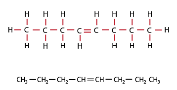Importancia biológica
Muchas moléculas biológicas importantes, como lípidos, tienen esqueletos de carbono. Los hidrocarburos almacenan energía en sus enlaces y pueden servir como parte de combustibles o componentes estructurales en organismos.
Estructuras de Hidrocarburos e Isómeros
Isomería: qué es
Los isómeros son moléculas con la misma fórmula molecular (mismos tipos y cantidades de átomos) pero distintas interconexiones o estructuras. Eso significa que pueden tener propiedades físicas o químicas diferentes pese a tener los mismos átomos.
Isómeros de cadena
Estos isómeros varían en la forma de su cadena de carbono: pueden ser lineales o ramificados. Por ejemplo, un hidrocarburo con cadena ramificada tiene diferente punto de ebullición que uno lineal con la misma fórmula.
Isómeros geométricos (cis-trans)
Se presentan cuando hay un doble enlace entre carbonos: - *Cis*: los grupos similares están del mismo lado del doble enlace. - *Trans*: los grupos similares están en lados opuestos. Esta diferencia en la geometría impacta en la forma de la molécula y sus propiedades.
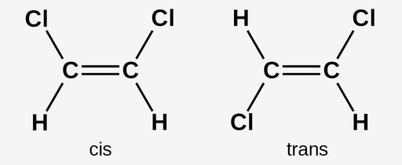Isómeros funcionales
Algunos isómeros tienen los mismos átomos, pero grupos funcionales distintos o ubicados de forma diferente, transformando la función de la molécula. Por ejemplo, un grupo -OH frente a un grupo -COOH cambia completamente el comportamiento químico.
Importancia biológica de la isomería
En los sistemas biológicos, los isómeros pueden tener funciones muy diferentes: dos moléculas isómeras pueden interactuar con enzimas diferentes, tener distintas solubilidades o reacciones químicas diversas, lo que impacta cómo actúan en la célula o el organismo.